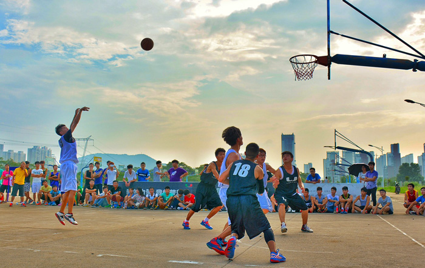
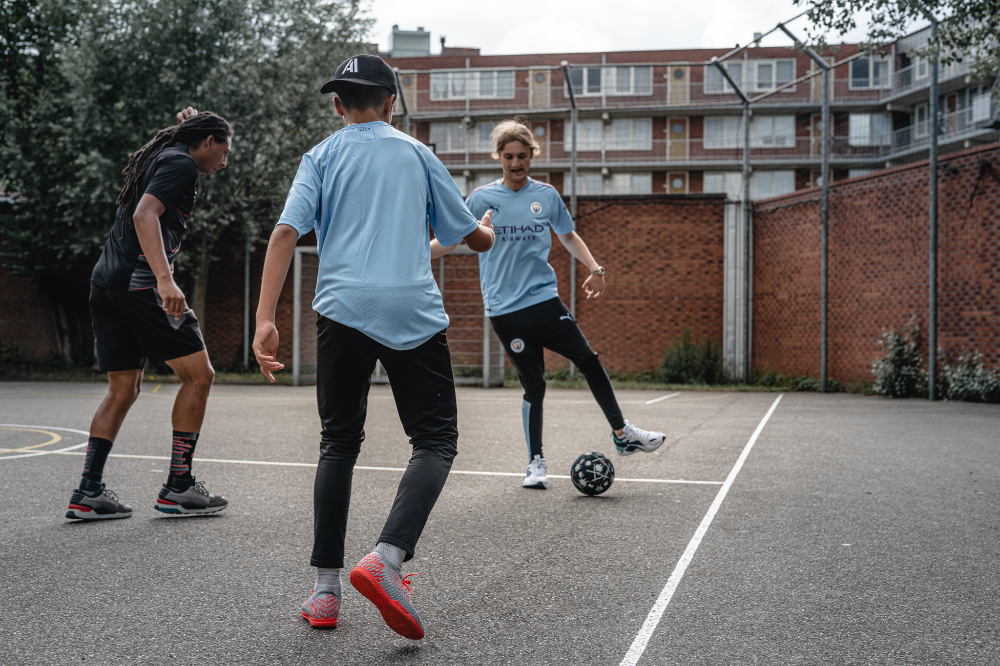
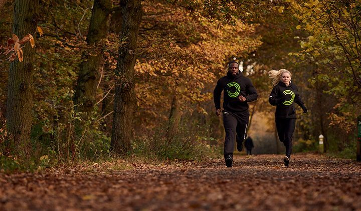
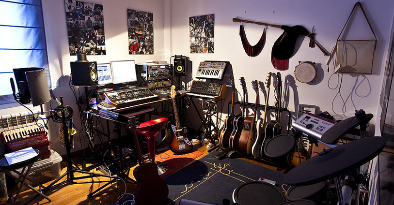

Sport
Basketbal
Vroeger speelde ik in een basketbal ploeg toen ik 13 jaar oud was, Ik ben dus daarna gestopt met spelen toen 19 werd .Maar in mijn vrije tijd speel ik nog altijd graag basketbal met vrienden.
Voetbal
ik was eigenlijk nog nooit een goede voetballer geweest maar ik vind het wel zo fijn om buiten voetbal te spelen met vrienden.
Lopen
Tijdens week loop ik ook eens graag in de park. Want ik vind het belangerijk om in goede gezondheid te blijven.
Muziek
Ik speel ook graag instrumenten in mijn vrijetijd. Ik had altijd al gedroomd om later een studio in te richten in mijn huis.
Gamen

Als ik tijd over heb game ik super graag tijdens week.